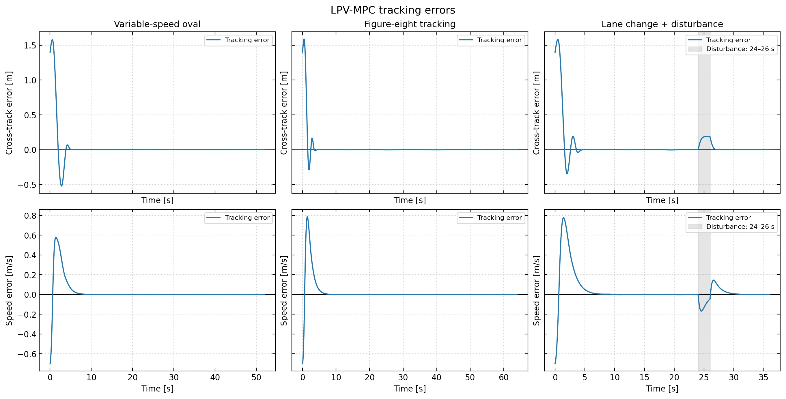

Predictive control · Tracking and recovery
Precision Vehicle Tracking and Disturbance Recovery
Reference-scheduled Linear Parameter-Varying Model Predictive Control (LPV-MPC) for recovering from tracking errors and temporary disturbances while respecting steering, acceleration, and command-rate limits.
Research focus
I investigated how a predictive controller recovers from initial misalignment and an unmodeled disturbance while following a changing reference trajectory. The study examines tracking accuracy and command smoothness under explicit input limits.
Methods and contributions
- Prediction model. Formulated along-track, cross-track, heading, and speed errors about a time-indexed reference. Scheduled a local linear model by reference speed and curvature over a 20-step horizon.
- Constrained optimization. Assembled a sparse quadratic program (QP) and solved it with OSQP, an operator-splitting solver. Applied the first command and replanned every 100 ms of simulated time, with steering, acceleration, rate, and speed bounds.
- Recovery evaluation. Evaluated variable-speed oval, figure-eight, and disturbed lane-change trajectories using a nonlinear kinematic bicycle model with fourth-order Runge–Kutta (RK4) integration. Measured full-run tracking errors and post-disturbance recovery, with independent checks on command, rate, and sampled-speed limits.
- Measure tracking error
- Schedule prediction model
- Build constrained QP
- Apply first command
- Simulate & repeat
Results
All 1,520 QP solves succeeded and the configured command, rate, and sampled-speed checks passed. Full-run position root mean square error (RMSE) ranged from 0.289 to 0.396 m, including startup recovery.
| Scenario | Position RMSE (m) | Cross-track RMSE (m) |
|---|---|---|
| Variable-speed oval | 0.318 | 0.250 |
| Figure-eight | 0.289 | 0.197 |
| Disturbed lane change | 0.396 | 0.271 |
Simulation setup
The experiments use a four-state kinematic vehicle with perfect state feedback and a known reference. Tire slip, measurement noise, and actuator lag are outside this model. These scenarios are separate from the earlier six-state reference-code study.
A closer look


Results and figures
- Precision Vehicle Tracking and Disturbance Recovery · theoretical report ↗
- Inspect recorded experiment metrics ↗
- Trajectory tracking · three scenarios ↗
- Cross-track and speed errors ↗
- Steering, acceleration, and rate limits ↗


Builds on concepts from Mark Misin’s study.